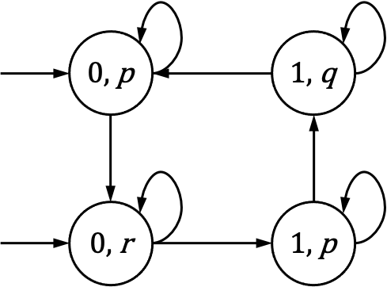
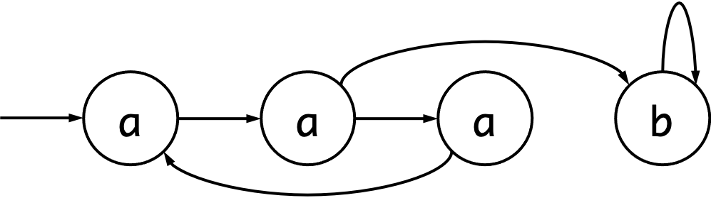

第2回 クリプキ構造と一階の論理表現
この回では，教科書の第3章 "Modeling Systems" の前半 (3.1 〜 3.4) について説明します．
概要
- システムのモデル化
- クリプキ構造
- 外部環境と非決定性
- 一階の論理表現
- ブール符号化
3. システムのモデル化
システムの正しさを検証するためには，システムが満たすべき特性を仕様化した上で，その真偽をどの抽象レベルで評価できるかを理解する必要がある． これはいわゆる要求工学 (requirements engineering) に近い手続きになる． 要件工学は，非形式的 (informal) な仕様やモデルから始まって，アルゴリズム的な検証を可能とするための形式的 (formal) な仕様やモデルへと発展していく． 第3章では形式的モデルを扱い，第4章では時相論理による形式的な仕様を導入する．
例えば，ある並列プログラムにおいてデッドロックをもたないことを保証したいとしよう． その際には，デッドロックがないことの正確な仕様だけでなく，例えばアトミックな処理の概念やスケジューリングの指針についての仮定など，システムの並行動作を適切に表現するモデルを提供することが求められる．
このように，どの特性が重要であるか理解したら，最初の重要なステップは，システムの形式的モデル (formal model) を構築することとなる． 自動検証を実現するには，特性の正しさに影響するシステムの側面を，モデルが捉えている必要がある． 一方で，特性の正しさには無関係なのに検証をより複雑にするような詳細については，抽象化しなければならない．
例えば，同期式のデジタル回路を検証する場合，実際の電圧レベルではなくゲートレベルでモデル化したり，ブール代数を用いて証明を行う方が有用であることも多い． 同様に，通信プロトコルを証明する際には，メッセージの交換に焦点を絞り，メッセージのテキストの内容や特定のオペレーティング・システムやデバイスの実装の詳細は無視したい場合もある． ここで注意すべきは，モデル化における「無視」とは，詳細を忘れてしまうことを意味するのではなく，むしろ，検証結果が与えられた実世界のシステムに適用できるよう制約を設けることを意味している．
多くのデジタル回路やプログラムは，リアクティブシステムである1． リアクティブシステムは，外部の環境と頻繁に相互作用を行い，多くの場合は終了することはない． そのため，入出力の対応関係よりも，むしろその内部状態に基づいて理解した方が適切にモデル化することができる． したがって，捉えるべきリアクティブシステムの最も重要な特徴は，その状態 (state)である． 状態とは，特定の瞬間におけるシステムの変数の値を記録したスナップショットである． システムの動作を分析するためには，何らかのアクションの結果として状態がどのように変化するか知る必要がある． アクション前後の状態を関連付けることでその変化を記述することができ，このような状態の組としてシステムの遷移 (transition) を捉えることができる． 結果として，リアクティブシステムの動作は，遷移の観点から定義できる． それぞれが遷移によって関連付けられた状態の（もしかすると無限の）列をパス (path) という．
リアクティブシステムの振る舞いに関するこういった直感を捉えるため，クリプキ構造 (Kripke structure) と呼ばれる一種の状態遷移グラフを利用する． クリプキ構造は，状態の集合，状態間の遷移の集合，および各状態に対してこの状態で真となるような特性の集合をラベル付けする関数から構成され，そのパスがシステムの振る舞いに対応する． クリプキ構造は非常に単純なモデルであるが，リアクティブシステムの証明を行う上で最も重要となる時間的な側面を捉えるのに十分な表現力をもっている． （リアクティブシステムの時間的な振る舞いを特徴付ける方法については，第４章で議論する）
実世界のシステムの記述は，通常 C や Java のようなプログラミング言語や，Verilog や VHDL のようなハードウェア記述言語（HDL）によって与えられる． このようなプログラミング言語の豊富さとシステムの種類の多さ（例えば，同期・非同期回路，共有変数をもつプログラム，メッセージ渡しで通信するプログラムを含む）を考慮すると，システムをモデル化するための統一的な形式化が必要となる． この目的のために，一階論理における式を用いる． プログラムから一階の論理表現への変換のは単純であり，また，一階の論理式からクリプキ構造を構築するのも同様に単純である．
3.1 遷移システムとクリプキ構造
遷移システムの形式化
クリプキ構造の話を始める前に，もう少し一般的な遷移システム (transition system) の形式化について説明する． 遷移システム は以下の３組 として定義される．ここで，
- は状態の集合であり
- は初期状態の集合であり，そして
- は遷移関係である.
遷移関係 はすべての に対して となる後続の状態 が存在する，いわゆる左全関係（left total) となる． 状態 からの有限パス (finite path) は，すべての に対して かつ となる列 である． 同様に，無限パス (infinite path) は，すべての について となるような状態の無限の列 である． 単にパスといった場合，有限パスと無限パスの両方を意味するものとする．
このように，本書におけるパスの概念は，グラフ理論で用いられている標準的な概念である． が左全関係なので，それぞれの有限パスは無限パスに拡張することができる． さらに，それぞれの有限パスはまた，無限パスのプレフィックス（prefix）として得ることもできる．
クリプキ構造の定義
特定の状態を観察するため，状態ラベルの集合を定義する． これらのラベルを原子命題 (atomic propositions)と呼び，すべての原子命題の集合を を用いて表す． このような状態ラベルで表現力を増した遷移システムをクリプキ構造と呼ぶ． クリプキ構造 は 5 つ組 である．ここで，
- ，，そして は上述の遷移システムの定義と同様であり，
- は原子命題の集合であり，そして
- は，各状態を，その状態で真となる原子命題の集合でラベル付けする関数である．
時として，初期状態の集合 を考えない場合がある． そのような場合，定義からこの状態の集合を省略する．
クリプキ構造は有向グラフを用いて可視化されることが多い． クリプキ構造における状態がノードとなり，状態間の遷移がノード間の辺を定義する． 状態ラベルは通常，ノード上またはノードの隣に注釈付けられる．
例として，, , , そして からなるクリプキ構造は次のように描画される．

初期状態は元ノードのないエッジによって区別される．
モデル
モデル検査の文脈では，モデルという言葉に関して少し注意が必要である． クリプキ構造は解析対象のシステムの振る舞いをモデル化したものなので，しばしばクリプキ構造はシステムの「モデル」である，という言い方をする． しかし理屈の上では，仮にクリプキ構造 が仕様を満たすならば が仕様のモデルとなる，という使い方が，モデルという言葉の意味からすると正確である． 実際のところ，「モデル検査」という呼称はこの論理的な概念から生まれたものである． 通常，モデルという単語が意図する意味は文脈から明らかであるが，少し注意してほしい．
3.2 外部環境と非決定性
先ほど説明した遷移システム（およびクリプキ構造）の定義を振り返ってみると，ある状態での遷移が確定していないことを許容している． 形式的に言うと，与えられた状態に対して 2 つ以上の後続状態が存在することが認められている． 同様に，初期状態も一意に決まる必要はない． こうした場合，遷移システムが非決定性 (nondeterminism) を含んでいるという．
システムをモデル化する際には，詳細な部分を省略したり，ある特定の動作だけを細かく表現することを避ける，ということが多い． 非決定性は，システム自体やその外部環境における未知の詳細部分をモデル化するためによく用いられる．
環境からの入力をモデル化するための非決定性の例として，以下のような電灯スイッチのモデルを考える． なお非決定性は，環境からの入力をモデル化するためだけに用いられるわけではなく，システム内のモデル化に用いる場合もある． 初期状態では電灯は消灯しており，ボタンが押されると電灯が点灯する． 消灯するには，ボタンを離してもう一度押す必要がある． それぞれの状態に，電灯が点灯している場合は 1，消灯している場合は 0，ボタンが離されていれば ，ボタンが押されていれば というラベルを付けると，以下の 4 つの状態をもつクリプキ構造が得られる．

ボタンを押す（または離す）人をモデル化しないために，以下のように非決定性を利用している．
- 初期状態は非決定的に決まる．つまり，ボタンが押されているか離されているかのいずれかである．これは，初期状態を 2 つ用意することでモデル化する．
- 4 つの状態それぞれに 2 つの後続状態が定義されており，非決定的に遷移が実行される．例えばラベル の状態を考えると，ボタンが押された場合をモデル化するラベル の状態への遷移と，押されなかった場合をモデル化する自己遷移の 2 つがある．
3.3 一階論理と記号表現
システムを記述するプログラミング言語やハードウェア記述言語固有の意味論を抽象化するために，一階の論理式を用いて初期状態の集合と遷移関係を表現する． 本章における論理や意味論の使い方はさほど形式的ではなく，一階理論や公理系よりも固定された数学構造上の一階の論理式の評価に注目している．
一階述語論理
一階述語論理は，個体への量化のみが可能な述語論理のことをいう．これが高階論理になると述語への量化が認められる． 記号としては，論理接続詞（論理積 ，論理和，否定，含意，など）や，全称（）と存在（）の量化記号などが用いられる．
ここでは，プログラム変数間の制約を記述するために，一階論理を用いる． したがって，プログラム変数は式中では一階の変数として現れ，その変数が解釈される数学構造はプログラム変数のデータ型に対応する．
例えば，整数型のプログラム変数は，自然数 として関連する演算と併せて解釈することや，32 ビットのビットベクターとして解釈することができる． 最初の解釈では，無限の状態空間を持つクリプキ構造が得られ，2 番目の解釈では，状態空間は大きいが有限となる． どちらのモデルもそれ自体は適切といえる． 無限状態のモデルはアルゴリズムの教科書に載っているような理想化された数学的な観点に対応しており，有限状態のモデルは現実の C プログラムを正確に表現することができる． プログラムが 2 つの解釈のどちらかでは正しくても，両方では正しくないような例題は簡単に構築できる．
状態集合の記号表現
状態はシステムの瞬間を表すものなので，状態をシステムの変数に割り当てられた値によって識別するのは自然なことである． （後述する，命令型プログラムにおけるプログラムカウンタはこのような変数の特別な例である．） この目的のため， をシステム変数の集合とし， を変数 のそれぞれの定義域とする． 変数 に対する付値 (valuation) は， の各変数 に の値を関連付ける関数である． したがって，状態は写像 となる．
変数の集合 と全ての に対して定義域 となる例を考えよう． このとき状態の集合は，（あるいは，単に ）となる. 与えられた付値に対して，その付値に対してのみ真である論理式を記述することができる． 例えば，付値 は次の式で表すことがでる． 一般に，式は多くの付値に対して真となってもよい． 論理式がそれを真とするすべての付値の集合を表すという慣例に則れば，一階の論理式によって状態集合の特定の部分集合を記述することができる． このように一階の論理式は，状態集合の特性関数 (characteristic function)，または記号表現 (symbolic representation) として捉えることができる． 特に，システムの初期状態の集合は， の変数の上の一階の論理式 で記述することができる．
上記の例に引き続き，状態集合の部分集合として，以下の 3 つの付値からなる集合を考えてみよう． この集合は，それぞれの付値を表す論理式の論理和として，一階の論理式を用いて表現できる． 一階の論理式 が を自由変数として与えられた場合，状態 が で表される集合の中にあることを示すために と書くことにする．
集合の表現に一階の論理式を利用することで，式の簡単化によりコンパクトな表現を得られる可能性がある． 以下の論理式は，先ほどの式と論理的に等価である． したがって，同じ状態集合を表している． このように一階の論理式を用いて集合を特徴づける場合，集合に対する演算は特性関数の変換として実現できる． と を集合 の部分集合とし， の上の関数 と を と のそれぞれの特性関数とする． このとき，，， はそれぞれ，，， に対応する．
同様の対応付けは，集合上の関係演算子についても適用される． 例えば， であるか否かは，式 が全ての に対して真と評価されるか否かを調べることで判定できる．
遷移関係の記号表現
遷移関係も，一階論理を用いることで記号的に表現できる． これは，状態の集合に対する記号的表現に対する考え方を拡張し，順序付き状態対の集合 (set of ordered pairs of states) を論理式として表現することにより実現する． 状態対は 2 つのシステム変数の付値を指すことから， の変数だけでは対を表現することができない． そこで，もう一つの変数の集合 を用いて， の変数を現状態 (present state) の変数， の変数を次状態 (next state) の変数と考えることにする． は のコピーとして作成され， のそれぞれの変数 は対応する次状態の変数 を にもつ． の変数への付値は，順序づけられた状態対，すなわち遷移を指定していると見ることができる．
これらの付値の集合は，前述の論理式を用いて表現することができる． を遷移関係とすると，それを表す論理式を と表記する． 例えば以下の式は，
- が変化せず（すなわち定数），
- が各ステップでインクリメントされ，そして
- が制約をもたない（すなわち非決定的に変化する）
というような遷移関係を表すことになる． を自由変数とする一階の論理式 が与えられたとき， で表された遷移関係に対 が含まれることを表すため， という表記を用いることにする．
原子命題の記号表現
原子命題の集合 も，同様の枠組みで定義する． は，システムの状態に関する情報を含むラベルの固定された有限集合である． 各ラベル に対して， であることを表すために と表記し， であることを表すために と表記する．
重要なこととして，は，状態（すなわち変数への付値）によってその真偽が一意に決定されるような任意の性質を含むことができる． 具体的には， および に対して， という形の式が のラベルとなりうる． 命題 は， であるならば，状態 において真となる． この場合，，すなわち となる．
より一般的には，命題は の自由変数をもつ一階の論理式として記述できる． 例えば複雑な命題として，以下のような論理式を考えることができる．
なお， をブール値 をもつ変数とするとき， は必ずしも と の両方を含んでいなくてもよい． を表すために と表記し， を表すために と表記する．
一階の論理式からのクリプキ構造の導出
それでは，並行システムを表す一階の論理式 および から，クリプキ構造 をどのように導くかについて説明しよう．
- 状態の集合 は， に対する全ての付値からなる集合とする．
- 初期状態の集合 は， を満たす全ての付値 からなる集合とする．すなわち， となる．
- および を状態として， であるとき，かつそのときのみ とする．
- ラベル付け関数 は， が， で真となる（すなわち となる）ラベル全てからなる集合となるように定義される．
クリプキ構造の遷移関係は全関係であることが求められるため，仮にある状態が後続をもたなければ関係 を拡張する． 慣例としては，こうした場合は を が満たされるように修正する．
Example 3.1
Example 3.1
これまでの定義を例示するため，定義域 をもつ 2 つの変数 および からなる簡単なシステムを考える． したがって，変数 および に対する 1 つの付値が，1 つのペア に対応する． ここで， は の値であり， は の値である． システムは， かつ となる状態から開始し，以下の 1 つのアクションのみを実行する．
このシステムは，2 つの一階の論理式によって記述される． システムの初期状態の集合は，以下の論理式で表現でき， 遷移の集合は，以下の論理式で表現できる． これらの式から抽出されるクリプキ構造 は，以下の通りである．
- .
- .
- .
- .
- , , , .
このクリプキ構造において，初期状態から始まる唯一のパスは， となる．
3.4 ブール符号化
命題論理では，論理式は， もしくは のいずれかとなる命題変数と，論理積，論理和，そして否定の論理接続子へと限定される． 多くの場合， を 1 と表記し， を 0 と表記する． ブール符号化によって，BDD や命題充足可能性 (SAT) といった命題論理に対する証明技術を利用することが可能となり，したがって， および に対する特性関数を命題論理へと変換する方法が求められる． 状態の集合 が有限であれば，こうした変換を行うことは必ず可能である．
Example 3.2
Example 3.2
以下の 4 つの状態をもつクリプキ構造を用いて，命題符号化について説明しよう．

状態には， あるいは のラベルが付けられている． モデルのこの 4 つの状態は， および で表される 2 つのブール変数で符号化できる． これらの定義域は となる． 最も左の状態を かつ として符号化し，2 番目の状態を かつ ，以下も同様に符号化する．
論理式は，それを満たす割当に対応する要素の全てからなる集合を表している． したがって，この符号化を用いて，初期状態の集合を以下の論理式で表すことができる．
同様に，遷移関係は以下で表される． この の 2 番目の節が， 2 つの遷移を表していることに気付いてほしい．
演習問題
問題 3.1 (特性関数)
特性関数は遷移関係や状態集合を定義するために用いられる．
- 以下の遷移関係の正確な特性関数を記述せよ．
- 関係 は左完全であるか答えよ．
- 関係 の反射推移閉包 (reflective transitive closure) を求めよ．
-
Z. Manna and A. Pnueli. The Temporal Logic of Reactive and Concurrent Systems: Specification . Springer, 1992. ↩